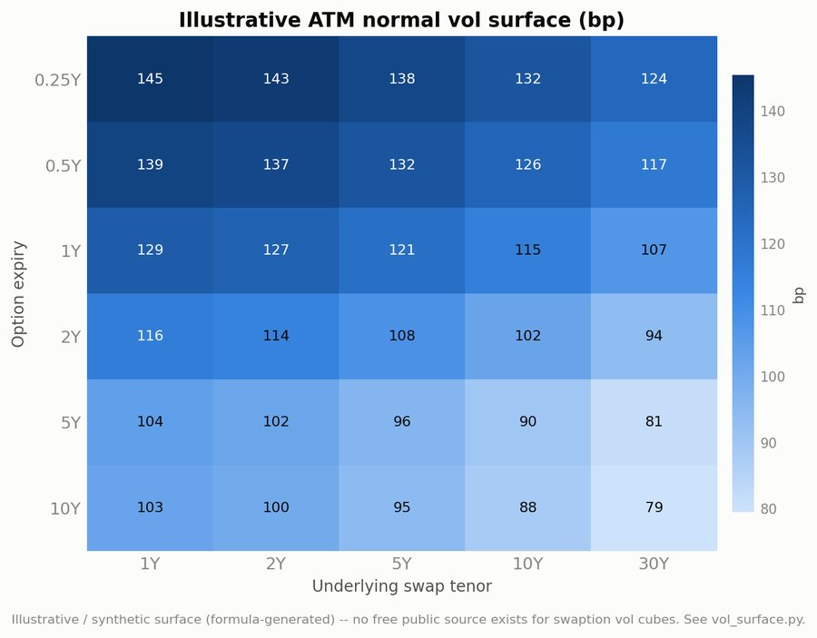

Statistics & Applied Math student at the University of Waterloo, building the tools traders and salespeople actually use day to day. Five work terms across RBC, BMO, and CIBC Capital Markets.
Desk tools above are internal — these are public.
